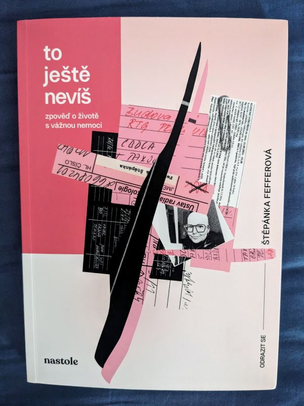

Štěpánku a její kanál na Instagramu jsem začala sledovat jen krátce předtím, než jí do života vstoupila vážná nemoc. Původně jsem čerpala z její bohaté studnice literárních tipů. O přečtených knížkách píše přesně tím způsobem, který mám ráda – otevřeně, upřímně, trefně a bez příkras. Ve stejném duchu pak začala postupně sdílet se svými sledujícími i to, jak moc mladému člověku změní život, tělo, vztahy a vůbec všechno diagnóza: rakovina.
To ještě nevíš rozhodně není lehké čtení, Štěpánka má však velký dar zpracovat i tak osobní a náročné téma způsobem, který je přístupný prakticky jakémukoliv čtenáři. Nevyhýbá se žádným otázkám, s přímočarostí líčí nejen celou řadu potupných i bolestivých zkušeností s našim systémem zdravotnictví, ale i strachy spojené s finančními otázkami, přijetím vlastního těla po kompletní mastektomii nebo krizí, do které vážná diagnóza a vlekoucí se léčba uvrhne doposud krásný a fungující partnerský vztah.
Štěpánka píše o věcech, které možná člověk, kterého se tato nemoc bezprostředně netýká, nechce slyšet, ale dalším důvodem, proč si myslím, že je To ještě nevíš čtením vhodným skutečně pro každého, je způsob, jakým autorka popisuje své vnitřní prožívání různých situací, které jsou s nemocí spojené, v kontrastu s reakcemi jejího nejbližšího okolí. Z knihy načerpáte povědomí o tom, co onkologický pacient od svých blízkých třeba právě potřebuje, ale nedokáže si o to říct, nebo jak zraňující mohou být slova, kterými okolí nemocného v dobré víře a snaze o podporu zahrnuje.
Kniha je natolik silná, že jsem ji zhltla během několika málo dnů téměř na posezení. Smekám před autorkou, s jakou otevřeností se se čtenáři podělila o ty nejintimnější a nejtěžší chvíle, které jí do života přinesla rakovina. A moc bych jí přála, aby se tahle náročná etapa definitivně uzavřela a příští kniha, kterou si od ní přečtu, byla na mnohem veselejší téma!
